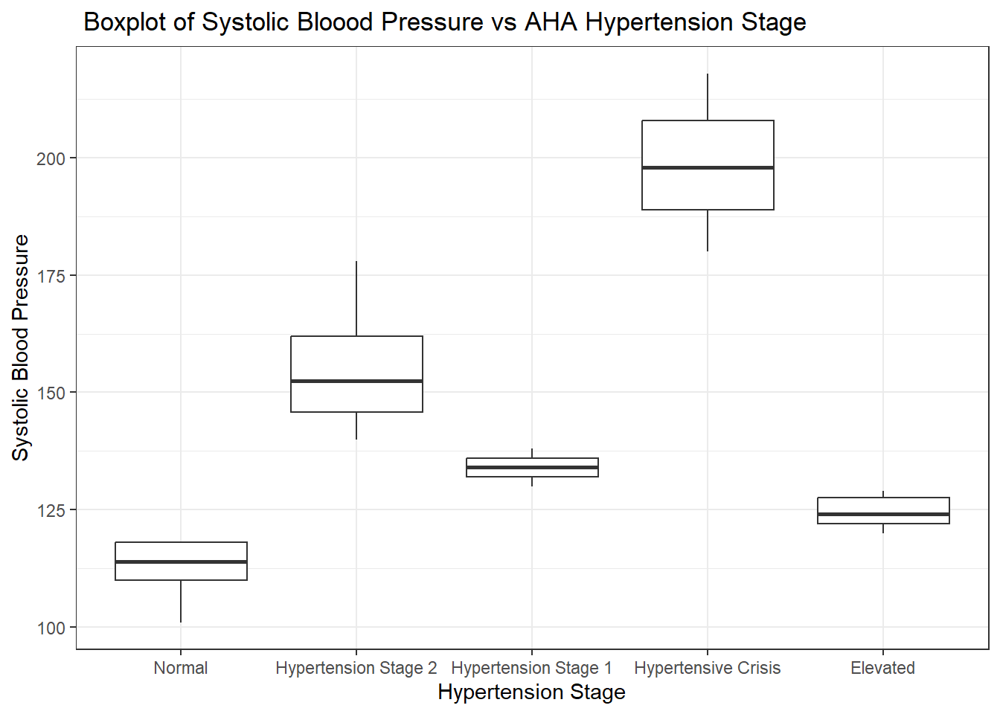
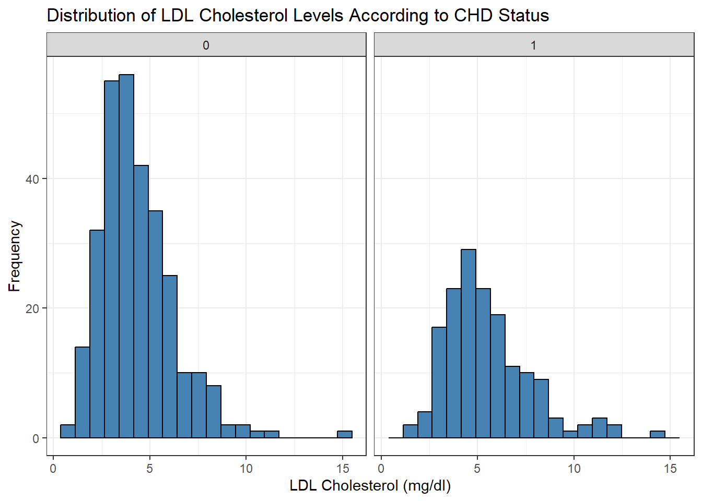
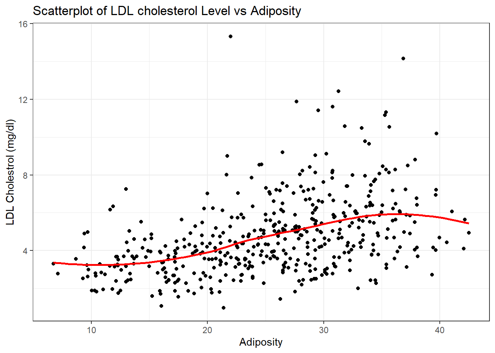
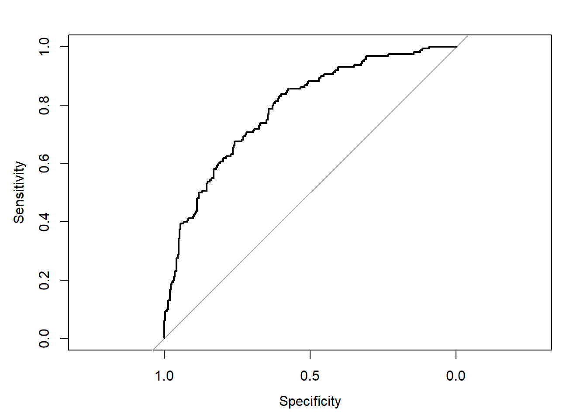

library(tidyverse)
library(broom)
library(finalfit)
library(gtsummary)
theme_set(theme_bw())EXAMPLE DATA ANALYSIS

Analysis Question:
The analysis aims to answer the question: “How do specific risk factors, such as age, cholesterol levels, smoking status, and blood pressure, influence the likelihood of myocardial infarction (MI) among white males aged 15 to 64 in high-incidence rural areas of the Western Cape, South Africa?” (Steyn et al. 1997)This logistic regression analysis will quantify and evaluate the strength of association between these risk factors and the presence of MI, helping to shed light on their contributions to cardiovascular health outcomes.(Rossouw et al. 1993)
Study Population
The study population lacks diversity as it involves only white men.No women or people of colour were included in the study so the results of this analysis may not be generisable.
Intended Audience:
The intended audience for this data analysis includes:
Healthcare professionals seeking to understand and address cardiovascular disease risk factors in rural populations.
Public health policymakers focused on designing targeted interventions for high-risk communities.
Medical researchers interested in the statistical relationships between cardiovascular risk factors and disease outcomes.
Students and educators in the fields of public health, epidemiology, and data science who can use this analysis as a case study for practical applications of logistic regression.
Source of Data:
The data analyzed in this project is derived from the Coronary Risk-Factor Study (CORIS),(Rossouw et al. 1983) a baseline survey conducted in three rural areas of the Western Cape, South Africa, as reported by Rousseauw et al. (1983). This study specifically assessed risk factors for ischemic heart disease among white males aged 15 to 64. The study article can be found here.(Rossouw et al. 1983)
Data Dictionary:
Below is a data dictionary describing key variables used in the analysis:
| Variable | Description | Type | Values/Units |
|---|---|---|---|
| MI (Myocardial Infarction) | Outcome variable indicating presence or absence of MI | Binary (0/1) | 0 = No MI, 1 = MI |
| Age | Age of participant (years) | Continuous | 15-64 years |
| Cholesterol | Total cholesterol level (mg/dL) | Continuous | Measured in mg/dL |
| Smoking Status | Indicates whether the participant is a smoker | Binary (0/1) | 0 = Non-smoker, 1 = Smoker |
| Blood Pressure | Systolic and/or diastolic blood pressure (mmHg) | Continuous | Measured in mmHg |
| BMI (Body Mass Index) | Body mass index (weight in kg/height in m²) | Continuous | Calculated value |
sa_heart <- read_csv("SAHeart.csv")
sa_heart %>% head(10)| row.names | sbp | tobacco | ldl | adiposity | famhist | typea | obesity | alcohol | age | chd |
|---|---|---|---|---|---|---|---|---|---|---|
| 1 | 160 | 12.00 | 5.73 | 23.11 | Present | 49 | 25.30 | 97.20 | 52 | 1 |
| 2 | 144 | 0.01 | 4.41 | 28.61 | Absent | 55 | 28.87 | 2.06 | 63 | 1 |
| 3 | 118 | 0.08 | 3.48 | 32.28 | Present | 52 | 29.14 | 3.81 | 46 | 0 |
| 4 | 170 | 7.50 | 6.41 | 38.03 | Present | 51 | 31.99 | 24.26 | 58 | 1 |
| 5 | 134 | 13.60 | 3.50 | 27.78 | Present | 60 | 25.99 | 57.34 | 49 | 1 |
| 6 | 132 | 6.20 | 6.47 | 36.21 | Present | 62 | 30.77 | 14.14 | 45 | 0 |
| 7 | 142 | 4.05 | 3.38 | 16.20 | Absent | 59 | 20.81 | 2.62 | 38 | 0 |
| 8 | 114 | 4.08 | 4.59 | 14.60 | Present | 62 | 23.11 | 6.72 | 58 | 1 |
| 9 | 114 | 0.00 | 3.83 | 19.40 | Present | 49 | 24.86 | 2.49 | 29 | 0 |
| 10 | 132 | 0.00 | 5.80 | 30.96 | Present | 69 | 30.11 | 0.00 | 53 | 1 |
missing_glimpse(sa_heart)| label | var_type | n | missing_n | missing_percent | |
|---|---|---|---|---|---|
| row.names | row.names | 462 | 0 | 0.0 | |
| sbp | sbp | 462 | 0 | 0.0 | |
| tobacco | tobacco | 462 | 0 | 0.0 | |
| ldl | ldl | 462 | 0 | 0.0 | |
| adiposity | adiposity | 462 | 0 | 0.0 | |
| famhist | famhist | 462 | 0 | 0.0 | |
| typea | typea | 462 | 0 | 0.0 | |
| obesity | obesity | 462 | 0 | 0.0 | |
| alcohol | alcohol | 462 | 0 | 0.0 | |
| age | age | 462 | 0 | 0.0 | |
| chd | chd | 462 | 0 | 0.0 |
# creating new columns to categorize the BMI values and systolic blood pressure values
sa_heart <- sa_heart %>%
mutate(
bp_category = case_when(
sbp < 120 ~ "Normal",
sbp >= 120 & sbp < 130 ~ "Elevated",
sbp >= 130 & sbp < 140 ~ "Hypertension Stage 1",
sbp >= 140 & sbp < 180 ~ "Hypertension Stage 2",
sbp >= 180 ~ "Hypertensive Crisis",
TRUE ~ NA_character_ # Handles unexpected or missing values
),
bmi_category = case_when(
obesity < 18.5 ~ "Underweight",
obesity >= 18.5 & obesity < 24.9 ~ "Normal weight",
obesity >= 25 & obesity < 29.9 ~ "Overweight",
obesity >= 30 & obesity < 34.9 ~ "Obesity Class 1 (Mild obesity)",
obesity >= 35 & obesity < 39.9 ~ "Obesity Class 2 (Moderate obesity)",
obesity >= 40 ~ "Obesity Class 3 (Severe obesity)",
TRUE ~ NA_character_ # Handles unexpected or missing values
),
row.names = NULL
) %>%
mutate(bp_category = as_factor(bp_category),
bmi_category = as_factor(bmi_category),
famhist = as_factor(famhist)) %>%
mutate(bp_category = fct_relevel(bp_category,"Normal"),
famhist = fct_relevel(famhist,"Absent")) %>%
relocate(c("bp_category","bmi_category"),.before = chd)
sa_heart %>% head(10)| sbp | tobacco | ldl | adiposity | famhist | typea | obesity | alcohol | age | bp_category | bmi_category | chd |
|---|---|---|---|---|---|---|---|---|---|---|---|
| 160 | 12.00 | 5.73 | 23.11 | Present | 49 | 25.30 | 97.20 | 52 | Hypertension Stage 2 | Overweight | 1 |
| 144 | 0.01 | 4.41 | 28.61 | Absent | 55 | 28.87 | 2.06 | 63 | Hypertension Stage 2 | Overweight | 1 |
| 118 | 0.08 | 3.48 | 32.28 | Present | 52 | 29.14 | 3.81 | 46 | Normal | Overweight | 0 |
| 170 | 7.50 | 6.41 | 38.03 | Present | 51 | 31.99 | 24.26 | 58 | Hypertension Stage 2 | Obesity Class 1 (Mild obesity) | 1 |
| 134 | 13.60 | 3.50 | 27.78 | Present | 60 | 25.99 | 57.34 | 49 | Hypertension Stage 1 | Overweight | 1 |
| 132 | 6.20 | 6.47 | 36.21 | Present | 62 | 30.77 | 14.14 | 45 | Hypertension Stage 1 | Obesity Class 1 (Mild obesity) | 0 |
| 142 | 4.05 | 3.38 | 16.20 | Absent | 59 | 20.81 | 2.62 | 38 | Hypertension Stage 2 | Normal weight | 0 |
| 114 | 4.08 | 4.59 | 14.60 | Present | 62 | 23.11 | 6.72 | 58 | Normal | Normal weight | 1 |
| 114 | 0.00 | 3.83 | 19.40 | Present | 49 | 24.86 | 2.49 | 29 | Normal | Normal weight | 0 |
| 132 | 0.00 | 5.80 | 30.96 | Present | 69 | 30.11 | 0.00 | 53 | Hypertension Stage 1 | Obesity Class 1 (Mild obesity) | 1 |
glimpse(sa_heart)Rows: 462
Columns: 12
$ sbp <dbl> 160, 144, 118, 170, 134, 132, 142, 114, 114, 132, 206, 13…
$ tobacco <dbl> 12.00, 0.01, 0.08, 7.50, 13.60, 6.20, 4.05, 4.08, 0.00, 0…
$ ldl <dbl> 5.73, 4.41, 3.48, 6.41, 3.50, 6.47, 3.38, 4.59, 3.83, 5.8…
$ adiposity <dbl> 23.11, 28.61, 32.28, 38.03, 27.78, 36.21, 16.20, 14.60, 1…
$ famhist <fct> Present, Absent, Present, Present, Present, Present, Abse…
$ typea <dbl> 49, 55, 52, 51, 60, 62, 59, 62, 49, 69, 72, 65, 59, 49, 5…
$ obesity <dbl> 25.30, 28.87, 29.14, 31.99, 25.99, 30.77, 20.81, 23.11, 2…
$ alcohol <dbl> 97.20, 2.06, 3.81, 24.26, 57.34, 14.14, 2.62, 6.72, 2.49,…
$ age <dbl> 52, 63, 46, 58, 49, 45, 38, 58, 29, 53, 60, 40, 17, 15, 5…
$ bp_category <fct> Hypertension Stage 2, Hypertension Stage 2, Normal, Hyper…
$ bmi_category <fct> Overweight, Overweight, Overweight, Obesity Class 1 (Mild…
$ chd <dbl> 1, 1, 0, 1, 1, 0, 0, 1, 0, 1, 1, 1, 0, 0, 0, 0, 0, 1, 1, …sa_heart %>% na.omit() %>%
ggplot(aes(x = bp_category, y= sbp))+
geom_boxplot()+
labs(x = "Hypertension Stage",
y = "Systolic Blood Pressure",
title =" Boxplot of Systolic Bloood Pressure vs AHA Hypertension Stage")
sa_heart %>% na.omit() %>%
ggplot(aes(x = ldl))+
geom_histogram( fill = "steelblue",color = "black",bins = 20)+
facet_wrap(~chd)+
labs(
x = "LDL Cholesterol (mg/dl)",
y = "Frequency",
title = "Distribution of LDL Cholesterol Levels According to CHD Status"
)
sa_heart %>%
ggplot(aes(x = adiposity, y = ldl))+
geom_point()+
geom_smooth(se = FALSE,color = "red")+
labs(x = "Adiposity",
y = "LDL Cholestrol (mg/dl)",
title ="Scatterplot of LDL cholesterol Level vs Adiposity" )
Fitting a Logistic Regression Model
chd_model <- glm(chd ~ age + ldl + famhist + bp_category + tobacco + alcohol,
data = sa_heart,
family = binomial(link = "logit"))Summary of Model Output
tidy_chd_model <- broom::tidy(chd_model)
tidy_chd_model| term | estimate | std.error | statistic | p.value |
|---|---|---|---|---|
| (Intercept) | -4.0591115 | 0.5610810 | -7.2344485 | 0.0000000 |
| age | 0.0431316 | 0.0102609 | 4.2035001 | 0.0000263 |
| ldl | 0.1740704 | 0.0552074 | 3.1530290 | 0.0016159 |
| famhistPresent | 0.9691752 | 0.2274414 | 4.2612081 | 0.0000203 |
| bp_categoryHypertension Stage 2 | -0.1553909 | 0.3737650 | -0.4157449 | 0.6775967 |
| bp_categoryHypertension Stage 1 | -0.0514822 | 0.3834480 | -0.1342611 | 0.8931961 |
| bp_categoryHypertensive Crisis | 0.7076330 | 0.6103901 | 1.1593127 | 0.2463288 |
| bp_categoryElevated | -0.5524892 | 0.4114846 | -1.3426729 | 0.1793779 |
| tobacco | 0.0772716 | 0.0266228 | 2.9024629 | 0.0037024 |
| alcohol | -0.0000748 | 0.0045027 | -0.0166164 | 0.9867426 |
#tidy_chd_model2 <- tidy(chd_model, conf.int = TRUE, exponentiate = TRUE)
#tidy_chd_model2
chd_model%>%
tbl_regression(exponentiate = TRUE)| Characteristic | OR1 | 95% CI1 | p-value |
|---|---|---|---|
| age | 1.04 | 1.02, 1.07 | <0.001 |
| ldl | 1.19 | 1.07, 1.33 | 0.002 |
| famhist | |||
| Absent | — | — | |
| Present | 2.64 | 1.69, 4.13 | <0.001 |
| bp_category | |||
| Normal | — | — | |
| Hypertension Stage 2 | 0.86 | 0.41, 1.80 | 0.7 |
| Hypertension Stage 1 | 0.95 | 0.45, 2.03 | 0.9 |
| Hypertensive Crisis | 2.03 | 0.62, 6.96 | 0.2 |
| Elevated | 0.58 | 0.26, 1.29 | 0.2 |
| tobacco | 1.08 | 1.03, 1.14 | 0.004 |
| alcohol | 1.00 | 0.99, 1.01 | >0.9 |
| 1 OR = Odds Ratio, CI = Confidence Interval | |||
sa_heart <- sa_heart %>%
mutate(predicted_prob = predict(chd_model, type = "response"))
library(pROC)
roc_curve <- roc(sa_heart$chd, sa_heart$predicted_prob)
plot(roc_curve)
auc(roc_curve)Area under the curve: 0.7889
AUC
The area under the curve (AUC) measures the ability of a model to discriminate between classes in a binary classification problem, with values closer to 1 indicating better predictive accuracy and validity.
Discussion of Results
This logistic regression analysis investigated the relationship between age, cholesterol levels (LDL), family history of heart disease, smoking status, and blood pressure categories with the likelihood of myocardial infarction (MI) among white males aged 15 to 64 in high-incidence rural areas of the Western Cape, South Africa. Age (OR = 1.04, 95% CI: 1.02-1.07, p < 0.001) and LDL cholesterol (OR = 1.19, 95% CI: 1.07-1.33, p = 0.002) were found to be significant predictors, indicating that an increase in these factors was associated with a higher likelihood of MI. A positive family history of heart disease was also a strong predictor (OR = 2.64, 95% CI: 1.69-4.13, p < 0.001). Blood pressure categories and smoking status did not show statistically significant associations.
The model demonstrated good discriminative ability, with an area under the ROC curve (AUC) of 0.7889. These findings underscore the importance of modifiable cardiovascular risk factors such as cholesterol management and the relevance of family history in predicting MI risk, emphasizing the need for targeted preventive strategies in this population.
The significant associations of age, LDL cholesterol, and family history with myocardial infarction highlight key risk factors requiring intervention, while the lack of significance for blood pressure categories and smoking status suggests potential complexities in their impact or limitations in sample representation.
list of packages and functions used
dplyr a)mutate b)case when
ggplot a)geom_point b)geom_histogram c)geom_scatterplot d)facet-wrap
tidyr 1) rename , relocate,
References
Rossouw, JE, JP Du Plessis, AJ Benadé, PC Jordaan, JP Kotzé, PL Jooste, and JJ Ferreira. 1983. “Coronary Risk Factor Screening in Three Rural Communities. The CORIS Baseline Study.” South African Medical Journal 64 (12): 430–36. https://europepmc.org/article/MED/6623218.
Rossouw, JE, PL Jooste, DO Chalton, EA Jordaan, ML Langenhoven, PC Jordaan, M Steyn, AS Swanepoel, and LJ Rossouw. 1993. “Community-Based Intervention: The Coronary Risk Factor Study (CORIS).” International Journal of Epidemiology 22 (3): 428–38. https://academic.oup.com/ije/article/22/3/428/674633.
Steyn, K, M Steyn, AS Swanepoel, PC Jordaan, PL Jooste, JM Fourie, and JE Rossouw. 1997. “Twelve-Year Results of the Coronary Risk Factor Study (CORIS).” International Journal of Epidemiology 26 (5): 964–71. https://academic.oup.com/ije/article/26/5/964/722477.